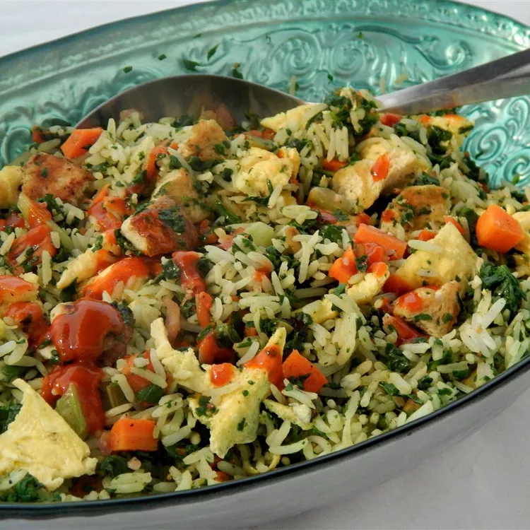

Fried Rice

Description
Quick and Cozy meal! Perfect for the fall and winter when u want a qucik but warm meal to fill you up!
Takes: about 30 minutes
Ingredients
- 1 tablespoon olive oil
- 12 ounce firm tofu
- 2 carrots (peeled)
- 2 stalks celery
- ¼ onion
- 2 cloves garlic, minced
- ground salt & black pepper
- 3 cups cooked white rice
- 4 eggs
- 8 ounce frozen chopped spinach
- 1 teaspoon sriracha hot sauce
Instructions
- Dice tofu, carrots, celery and onion
- Heat oil in a skillet over medium-high heat.
- Add tofu, carrots, celery, onion, and garlic; cook and stir until vegetables are just soft (5 to 10 minutes).
- Stir rice, egg, and spinach into tofu mixture until egg is no longer runny (ca. 5 minutes).
- Stir in Sriracha sauce; season with salt and pepper.
This is a recipie inspired by:
All Recipies